컴퓨터활용능력-1급 (2018-03-03 기출문제)
1과목: 컴퓨터 일반
1. 다음 중 사운드 데이터의 샘플링(Sampling)에 관한 설명으로 옳지 않은 것은?
- 디지털 신호를 아날로그 신호로 변환해 주는 작업이다.
- 샘플링 레이트(Sampling Rate)가 높을수록 원음에 가깝다.
- 샘플링 레이트는 초당 샘플링 횟수를 의미한다.
- 샘플링 레이트의 단위는 Hz(헤르츠)를 사용한다.
(정답률: 82%)

2. 다음 중 이미지 데이터의 표현 방식에서 벡터(Vector) 방식에 관한 설명으로 옳지 않은 것은?
- 벡터 방식의 그림 파일 형식에는 wmf, ai 등이 있다.
- 이미지를 점과 선을 이용하여 표현하는 방식이다.
- 그림을 확대하거나 축소할 때 계단 현상이 발생하지 않는다.
- 포토샵, 그림판 등의 소프트웨어로 그림을 편집할 수 있다.
(정답률: 76%)
3. 다음 중 컴퓨터의 정상적인 작동을 방해하여 운영체제나 저장된 데이터에 손상을 입힐 수 있는 보안 위협의 종류는?
- 바이러스
- 키로거
- 애드웨어
- 스파이웨어
(정답률: 93%)
4. 다음 중 방화벽(Firewall)에 대한 설명으로 옳지 않은 것은?
- 보안이 필요한 네트워크의 통로를 단일화하여 관리한다.
- 내부 네트워크에서 외부로 나가는 패킷을 체크하여 인증된 패킷만 통과시킨다.
- 역추적 기능으로 외부 침입자의 흔적을 찾을 수 있다.
- 방화벽은 외부 네트워크와 내부 네트워크 사이에 위치 한다.
(정답률: 87%)
5. 다음 중 인터넷에서 사용하는 TCP/IP에 대한 설명으로 옳지 않은 것은?
- 서로 다른 기종의 컴퓨터들 간 데이터를 송/수신하기 위한 표준 프로토콜이다.
- 일부 망에 장애가 있어도 다른 망으로 통신이 가능한 신뢰성을 제공한다.
- TCP는 패킷 주소를 해석하고 최적의 경로를 결정하여 전송하는 역할을 한다.
- IP는 OSI 7계층 중 네트워크 계층에 해당하는 프로토콜이다.
(정답률: 62%)
6. 다음 중 유비쿼터스 센서 네트워크(USN)의 활용 분야에 속하는 것은?
- 테더링
- 텔레매틱스
- 블루투스
- 고퍼
(정답률: 75%)
7. 다음 중 전자우편에서 사용하는 POP3 프로토콜에 관한 설명으로 옳은 것은?
- 사용자가 작성한 이메일을 다른 사람의 계정으로 전송해주는 역할을 한다.
- 메일 서버의 이메일을 사용자의 컴퓨터로 가져올 수 있도록 메일 서버에서 제공하는 프로토콜이다.
- 멀티미디어 전자우편을 주고 받기 위한 인터넷 메일의 표준 프로토콜이다.
- 웹 브라우저에서 제공하지 않는 멀티미디어 파일을 확인하여 실행시켜주는 프로토콜이다.
(정답률: 74%)
8. 다음 중 인터넷을 사용하기 위한 IPv6 주소 체계에 대한 설명으로 옳지 않은 것은?
- IPv4의 업그레이드 버전으로 주소 구조가 64비트로 확장되었다.
- 주소의 각 부분은 콜론(:)으로 구분하여 16진수로 표현한다.
- IPv4에 비해 주소의 확장성, 융통성, 연동성이 뛰어나다.
- 실시간 흐름 제어로 향상된 멀티미디어 기능을 지원한다.
(정답률: 79%)
9. 다음 중 컴퓨터 메인보드의 버스(Bus)에 관한 설명으로 옳지 않은 것은?
- 컴퓨터에서 데이터를 주고받는 통로로 사용 용도에 따라 내부 버스, 외부 버스, 확장 버스로 구분된다.
- 내부 버스는 CPU와 주변장치 간의 데이터 전송에 사용되는 통로이다.
- 외부 버스는 전달하는 신호의 형태에 따라 데이터 버스, 주소 버스, 제어 버스로 구분된다.
- 확장 버스는 메인보드에서 지원하는 기능 외에 다른 기능을 지원하는 장치를 연결하는 부분으로 끼울 수 있는 형태이기에 확장 슬롯이라고도 한다.
(정답률: 64%)
10. 다음 중 웹 프로그래밍 언어에 대한 설명으로 옳지 않은 것은?
- ASP는 서버 측에서 동적으로 수행되는 페이지를 만들기 위한 언어로 Windows 계열의 운영체제에서 실행 가능하다.
- PHP는 클라이언트 측에서 동적으로 수행되는 스크립트언어로 Unix 운영체제에서 실행 가능하다.
- XML은 HTML의 단점을 보완하여 웹에서 구조화된 폭넓고 다양한 문서들을 상호 교환할 수 있도록 설계된 언어이다.
- JSP는 자바로 만들어진 서버 스크립트로 다양한 운영체제에서 사용 가능하다.
(정답률: 64%)
11. 다음 중 임베디드 시스템에 관한 설명으로 옳은 것은?
- 지역적으로 다른 위치에 있는 여러 대의 컴퓨터를 연결하여 분산 처리하는 시스템이다.
- 처리할 데이터를 일정시간 동안 모아서 일괄 처리하는 방식의 시스템이다.
- 특정 기능을 수행하기 위하여 전체 장치의 일부분으로 내장되는 전자 시스템이다.
- 두 개의 CPU가 동시에 같은 업무를 처리하는 방식으로 업무의 신뢰도를 높이는 작업에 이용된다.
(정답률: 71%)
12. 다음 중 컴퓨터 운영체제의 성능 평가 기준에 해당하지 않는 것은?
- 일정 시간 내에 시스템이 처리하는 양을 의미하는 처리능력(Throughput)
- 작업을 의뢰한 시간부터 처리가 완료된 시간까지의 반환시간(Turn Around Time)
- 중앙처리장치의 사용 정도를 측정하는 사용 가능도(Availability)
- 주어진 문제를 정확하게 해결하는 정도를 의미하는 신뢰도(Reliability)
(정답률: 76%)
13. 다음 중 컴퓨터의 발전 과정으로 3세대 이후의 특징에 해당하지 않는 것은?
- 개인용 컴퓨터의 사용
- 전문가 시스템
- 일괄처리 시스템
- 집적회로의 사용
(정답률: 71%)
14. 다음 중 CMOS 셋업 프로그램에서 설정할 수 없는 항목은?
- 시스템 암호 설정
- 하드 디스크의 타입
- 멀티부팅 시 사용하려는 BIOS의 종류
- 하드 디스크나 USB 등의 부팅 순서
(정답률: 52%)
15. 다음 중 컴퓨터 업그레이드에 관한 설명으로 적절하지 않은 것은?
- 컴퓨터 처리 성능의 개선을 위해 하드웨어 업그레이드를 한다.
- 장치 제어기를 업그레이드하면 하드웨어를 교체하지 않더라도 보다 향상된 기능으로 하드웨어를 사용할 수 있다.
- 하드 디스크 업그레이드의 경우에는 부족한 공간 확보를 위해 파티션이 여러 개로 나뉘는 제품을 선택한다.
- 고사양을 요구하는 소프트웨어가 늘어남에 따라 컴퓨터의 처리 속도가 느려지거나 제대로 동작 하지 않을 경우 가장 먼저 고려하는 것은 RAM 업그레이드이다.
(정답률: 68%)
16. 다음 중 Windows [제어판]의 [프로그램(및 기능)] 범주에서 할 수 있는 작업에 관한 설명으로 옳지 않은 것은?(윈도우 10 검증 완료)
- [프로그램 제거]를 이용하여 프로그램을 제거할 수 있으며, 삭제된 프로그램 파일을 복원할 수도 있다.
- [설치된 업데이트 보기]를 이용하면 설치된 업데이트를 제거할 수 있다.
- [Windows 기능 사용/사용 안 함(켜기/끄기)]을 이용하여 Windows에 포함되어 있는 인터넷 정보 서비스 같은 일부 프로그램 및 기능을 사용하도록 설정하거나 해제할 수 있다.
- [기본 프로그램 설정]을 이용하면 모든 파일 형식 및 프로토콜을 열 수 있는 기본 프로그램을 설정할 수 있다.
(정답률: 70%)
17. 다음 중 NTFS 파일 시스템에 관한 설명으로 옳지 않은 것은?
- 파일 및 폴더에 대한 액세스 제어를 유지하고 제한된 계정을 지원한다.
- Active Directory 서비스를 제공한다.
- 하드 디스크의 파티션(볼륨) 크기를 100GB까지 지원한다.
- FAT나 FAT32 파일 시스템보다 성능, 보안, 안전성이 높다.
(정답률: 81%)
18. 다음 중 Windows에서 네트워크 연결 시 IP설정이 자동으로 할당되지 않을 경우 직접 설정해야 하는 TCP/IP 속성에 해당하지 않는 것은?(윈도우 10 검증 완료)
- IP 주소
- 기본 게이트웨이
- 서브넷 마스크
- 라우터 주소
(정답률: 62%)
19. 다음 중 Windows의 [제어판]-[키보드]에서 설정할 수 있는 것으로 옳지 않은 것은?(윈도우 10 검증 완료)
- 입력 위치를 표시하는 커서의 모양을 선택할 수 있다.
- 키 반복 속도를 조절할 수 있다.
- 커서 깜박임 속도를 조절할 수 있다.
- 키 재입력 시간을 조절할 수 있다.
(정답률: 75%)
20. 다음 중 Windows에서 설치된 기본 프린터의 인쇄 관리자 창에서 실행할 수 있는 작업으로 옳지 않은 것은?(윈도우 10 검증 완료)
- 인쇄 작업이 시작된 문서도 중간에 강제로 인쇄를 종료 할 수 있으며 잠시 중지시켰다가 다시 인쇄할 수 있다.
- [프린터] 메뉴에서 [모든 문서 취소]를 선택하면 스풀러에 저장되어 있는 모든 인쇄 작업을 취소할 수 있다.
- 인쇄 대기 중인 문서를 삭제하거나 출력 대기 순서를 임의로 조정할 수 있다.
- 인쇄 중인 문서나 오류가 발생한 문서를 다른 프린터로 전송할 수 있다.
(정답률: 78%)
2과목: 스프레드시트 일반
21. 다음 중 아래 워크시트의 '사번' 필드에 그림과 같이 사용자 지정 자동 필터를 적용하는 경우 표시되는 결과 행은?
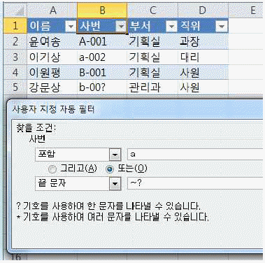
- 3행
- 2행, 3행
- 3행, 5행
- 2행, 3행, 5행
(정답률: 64%)
22. 다음 중 [데이터] 탭 [외부 데이터 가져오기] 그룹의 각 명령에 대한 설명으로 옳지 않은 것은?
- [기타 원본]-[Microsoft Query]를 이용하면 여러 테이블을 조인(join)한 결과를 워크시트로 가져올 수 있다.
- [기존 연결]을 이용하면 Microsoft Query에서 작성한 쿼리 파일(*.dqy)의 실행 결과를 워크시트로 가져올 수 있다.
- [웹]을 이용하면 웹 페이지의 모든 데이터를 원본 그대로 가져올 수 있다.
- [Access]를 이용하면 원본 데이터의 변경 사항이 워크시트에 반영되도록 설정할 수 있다.
(정답률: 66%)
23. 다음 중 날짜 데이터의 자동 채우기 옵션에 포함되지 않는 내용은?
- 일 단위 채우기
- 주 단위 채우기
- 월 단위 채우기
- 평일 단위 채우기
(정답률: 67%)
24. 다음 중 데이터 정렬에 대한 설명으로 옳지 않은 것은?
- 정렬 조건을 최대 64개까지 지정할 수 있어 다양한 조건으로 정렬할 수 있다.
- 숨겨진 열이나 행은 정렬 시 이동되지 않으므로 데이터를 정렬하기 전에 숨겨진 열과 행을 표시하는 것이 좋다.
- 정렬 기준을 글꼴 색이나 셀 색으로 선택한 경우의 기본 정렬 순서는 오름차순의 경우 밝은 색에서 어두운 색 순으로 정렬된다.
- 첫째 기준뿐만 아니라 모든 정렬 기준에서 사용자 지정 목록을 정렬 기준으로 사용할 수 있다.
(정답률: 64%)
25. 다음 중 Excel에서 Access와의 데이터 교환 방법에 대한 설명으로 적절하지 않은 것은?
- Excel 통합 문서를 열 때 Access 데이터에 연결하려면 보안 센터 표시줄을 사용하거나 통합 문서를 신뢰할 수 있는 위치에 둠으로써 데이터 연결을 사용할 수 있도록 설정해야 한다.
- [데이터]탭 [외부 데이터 가져오기]그룹에서 [기타 원본]-[Microsoft Query]를 선택하면 Access 파일의 특정 테이블의 특정 필드만 선택하여 가져올 수도 있다.
- [데이터]탭 [외부 데이터 가져오기]그룹에서 [Access]를 선택하면 특정 Access 파일에서 테이블을 선택하여 피벗 테이블 보고서로 가져올 수도 있다.
- [데이터]탭 [연결]그룹에서 [속성]을 클릭하면 기존 Access 파일의 연결을 추가하거나 제거할 수 있다.
(정답률: 45%)
26. 다음 중 아래 워크시트에서 [C2:C4] 영역을 선택하여 작업한 결과가 다른 것은?
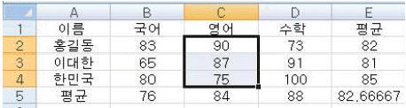
- <Delete>키를 누른 경우
- <Backspace>키를 누른 경우
- 마우스 오른쪽 버튼의 바로 가기 메뉴에서 [내용 지우기]를 선택한 경우
- [홈]탭 [편집]그룹에서 [지우기]-[내용 지우기]를 선택한 경우
(정답률: 79%)
27. 아래 워크시트에서 부서명[E2:E4]을 번호[A2:A11] 순서대로 반복하여 발령부서[C2:C11]에 배정하고자 한다. 다음 중 [C2] 셀에 입력할 수식으로 옳은 것은?
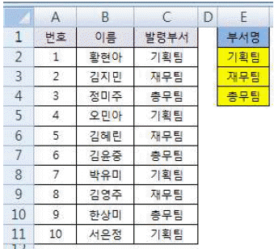
- =INDEX($E$2:$E$4, MOD(A2,3))
- =INDEX($E$2:$E$4, MOD(A2,3)+1)
- =INDEX($E$2:$E$4, MOD(A2-1,3)+1)
- =INDEX($E$2:$E$4, MOD(A2-1,3))
(정답률: 58%)
28. 아래 워크시트에서 매출액[B3:B9]을 이용하여 매출 구간별 빈도수를 [F3:F6] 영역에 계산하고자 한다. 다음 중 이를 위한 배열수식으로 옳은 것은?
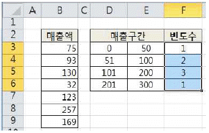
- {=PERCENTILE(B3:B9,E3:E6)}
- {=PERCENTILE(E3:E6,B3:B9)}
- {=FREQUENCY(B3:B9,E3:E6)}
- {=FREQUENCY(E3:E6,B3:B9)}
(정답률: 70%)
29. 다음 중 아래 워크시트의 [A1] 셀에 사용자 지정 표시 형식 '#,###,'을 적용했을 때 표시되는 값은?
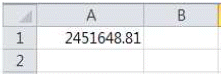
- 2,451
- 2,452
- 2
- 2.4
(정답률: 83%)
30. 다음 중 [매크로] 대화상자에 대한 설명으로 옳지 않은 것은?
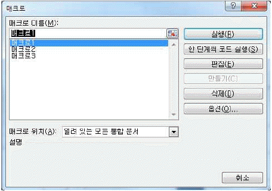
- 매크로 이름 상자에서는 매크로의 이름을 선택하여 변경할 수 있다.
- [한 단계씩 코드 실행] 단추를 클릭하면 선택한 매크로를 한 줄씩 실행한다.
- [편집] 단추를 클릭하면 선택한 매크로를 수정할 수 있도록 VBA가 실행된다.
- [옵션] 단추를 클릭하면 바로 가기 키를 설정하거나 변경할 수 있다.
(정답률: 55%)
31. 다음 중 [머리글/바닥글] 기능에 대한 설명으로 옳지 않은 것은?
- 머리글이나 바닥글의 텍스트에 앰퍼샌드(&) 문자 한 개를 포함시키려면 앰퍼샌드(&) 문자를 두 번 입력한다.
- 여러 워크시트에 동일한 [머리글/바닥글]을 한 번에 추가하려면 여러 워크시트를 선택하여 그룹화 한 후 설정한다.
- [페이지 나누기 미리 보기] 상태에서는 워크시트에 머리글과 바닥글 영역이 함께 표시되어 간단히 머리글/바닥글을 추가할 수 있다.
- 차트 시트인 경우 [페이지 설정] 대화 상자의 [머리글/바닥글] 탭에서 머리글/바닥글을 추가할 수 있다.
(정답률: 57%)
32. 아래의 워크시트에서 [D2] 셀에 SUM 함수를 사용하여 총점을 계산한 후 채우기 핸들을 [D5] 셀까지 드래그 하여 총점을 계산하는 '총점' 매크로를 생성하였다. 다음 중 아래 '총점' 매크로의 VBA 코드 창에서 괄호() 안에 해당하는 값을 올바르게 나열한 것은?
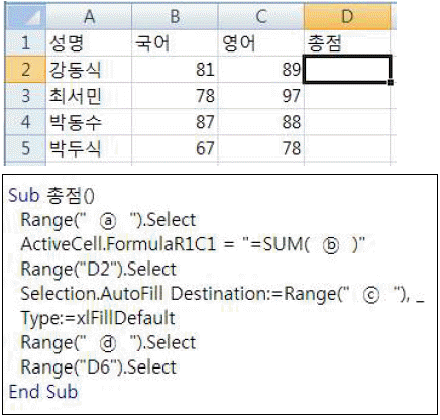
- ⓐ D2, ⓑ (RC[-1]:RC[-1]), ⓒ D5, ⓓ D5
- ⓐ A6, ⓑ (RC[-1]:RC[-0]), ⓒ D2:D5, ⓓ D5
- ⓐ D2, ⓑ (RC[-2]:RC[-0]), ⓒ D5, ⓓ D2:D5
- ⓐ D2, ⓑ (RC[-2]:RC[-1]), ⓒ D2:D5, ⓓ D2:D5
(정답률: 60%)
33. 다음 중 아래 워크시트에서 수식 '=SUM($B$2:C2)'이 입력된 [D2]셀을 [D4] 셀에 복사하여 붙여 넣었을 때의 결과 값은?
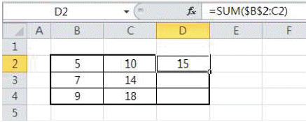
- 15
- 27
- 42
- 63
(정답률: 63%)
34. 다음 중 아래의 워크시트에서 [B3] 셀이 선택되어 있는 경우 각 키의 사용 결과로 옳지 않은 것은?
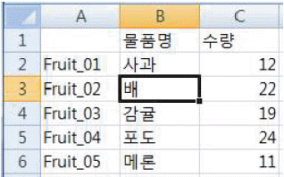
- <Home>키를 눌러서 현재 열의 첫 행인 [B1] 셀로 이동한다.
- <Ctrl>+<Home>키를 눌러서 [A1] 셀로 이동한다.
- <Ctrl>+<End>키를 눌러서 데이터가 포함된 마지막 행/열에 해당하는 [C6] 셀로 이동한다.
- <Shift>+<Enter>키를 눌러서 한 행 위인 [B2] 셀로 이동한다.
(정답률: 57%)
35. 다음 중 아래 워크시트에서 [A6] 셀에 수식 '=VLOOKUP(“C”,A2:C5,3,0)'을 입력한 경우의 결과로 옳은 것은?
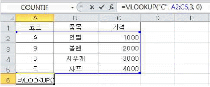
- #N/A
- #Name?
- B
- 2000
(정답률: 67%)
36. 다음 중 아래의 워크시트에서 작성한 수식으로 결과 값이 다른 것은?
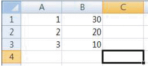
- {=SUM((A1:A3*B1:B3))}
- {=SUM(A1:A3*{30;20;10})}
- {=SUM(A1:A3*{30,20,10})}
- =SUMPRODUCT(A1:A3, B1:B3)
(정답률: 57%)
37. 다음 중 아래 그림에서의 각 기능에 대한 설명으로 옳지 않은 것은?
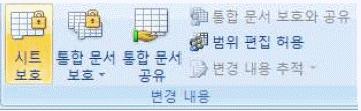
- [시트 보호]를 설정하면 기본적으로 셀의 선택만 가능하다.
- 시트 보호 시 특정 셀의 내용만 수정 가능하도록 하려면 해당 셀의 [셀 서식]에서 '잠금' 설정을 해제한다.
- [통합 문서 보호]를 설정하면 포함된 차트, 도형 등의 그래픽 개체를 변경할 수 없다.
- [범위 편집 허용]을 이용하면 보호된 워크시트에서 특정 사용자가 범위를 편집할 수 있도록 허용할 수 있다.
(정답률: 61%)
38. 다음 중 아래 차트와 같이 X축을 위쪽에 표시하기 위한 방법으로 옳은 것은?
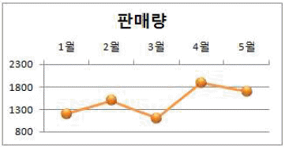
- 가로 축을 선택한 후 [축 서식]의 축 옵션에서 세로 축 교차를 '최대 항목'으로 설정한다.
- 가로 축을 선택한 후 [축 서식]의 축 옵션에서 '항목을 거꾸로'를 설정한다.
- 세로 축을 선택한 후 [축 서식]의 축 옵션에서 가로 축 교차를 '축의 최대값'으로 설정한다.
- 세로 축을 선택한 후 [축 서식]의 축 옵션에서 '값을 거꾸로'를 설정한다.
(정답률: 56%)
39. 다음 중 차트 만들기에 관한 설명으로 옳지 않은 것은?
- 워크시트에 삽입된 차트는 [차트 이동] 기능을 이용하여 새 통합 문서의 차트 시트로 배치할 수 있다.
- 차트를 만들 데이터를 선택하고 <F11>키를 누르면 별도의 차트 시트(Chart1)에 기본 차트가 만들어진다.
- 차트에서 사용할 데이터가 들어있는 셀을 하나만 선택하고 차트를 만들면 해당 셀을 직접 둘러싸는 셀의 데이터가 모두 차트에 표시된다.
- 차트로 만들 데이터를 선택하고 <Alt>+<F1>키를 누르면 현재 시트에 기본 차트가 만들어진다.
(정답률: 29%)
40. 다음 중 [페이지 레이아웃] 보기 상태에 대한 설명으로 옳지 않은 것은?
- 페이지 레이아웃 보기에서도 기본 보기와 같이 데이터 형식과 레이아웃을 변경할 수 있다.
- 페이지 레이아웃 보기에서 표시되는 눈금자의 단위는 [Excel 옵션]의 '고급' 범주에서 변경할 수 있다.
- 마우스를 이용하여 페이지 여백과 머리글과 바닥글 여백을 조정할 수 있다.
- 페이지 나누기를 조정하는 페이지 구분선을 마우스로 드래그하여 페이지 나누기를 빠르게 조정할 수 있다.
(정답률: 46%)
3과목: 데이터베이스 일반
41. 다음 중 VBA에서 [프로시저 추가] 대화상자의 각 옵션에 대한 설명으로 옳지 않은 것은?
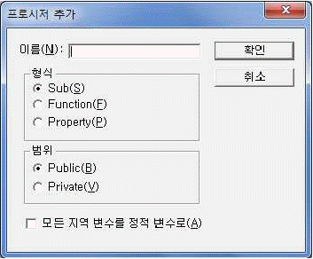
- Sub와 Public을 선택한 경우 Sub 프로시저는 모듈 내의 모든 프로시저에서 해당 Sub 프로시저를 호출 할 수 있다.
- Sub와 Private를 선택한 경우 Sub 프로시저는 선언된 모듈 내의 다른 프로시저에서만 호출할 수 있다.
- Function과 Public을 선택한 경우 Function 프로시저는 모든 모듈의 모든 프로시저에 액세스할 수 있다.
- Function과 Private를 선택한 경우 Function 프로시저는 모든 모듈의 다른 프로시저에서만 액세스할 수 있다.
(정답률: 53%)
42. 다음 중 하위 보고서에 대한 설명으로 옳지 않은 것은?
- 관계 설정에 문제가 있을 경우, 하위 보고서가 제대로 표시되지 않을 수 있다.
- 디자인 보기 상태에서 하위 보고서의 크기 조절 및 이동이 가능하다.
- 테이블, 쿼리, 폼 또는 다른 보고서를 이용하여 하위 보고서를 작성할 수 있다.
- 하위 보고서에는 그룹화 및 정렬 기능을 설정할 수 없다.
(정답률: 73%)
43. 다음 중 액세스의 작업을 자동화하고 폼이나 보고서의 컨트롤에 기능들을 미리 정의하여 사용할 수 있도록 하는 기능은?
- 매크로
- 응용 프로그램 요소
- 업무 문서 양식 마법사
- 성능 분석 마법사
(정답률: 78%)
44. 다음 중 관계형 데이터 모델에서 데이터의 정확성과 일관성을 보장하기 위한 것은?
- 릴레이션
- 관계 연산자
- 무결성 제약조건
- 속성의 집합
(정답률: 72%)
45. 다음 중 E-R 다이어그램 표기법의 기호와 의미가 바르게 연결된 것은?
- 사각형 - 속성(Attribute) 타입
- 마름모 - 관계(Relationship) 타입
- 타원 - 개체(Entity) 타입
- 밑줄 타원 - 의존 개체 타입
(정답률: 69%)
46. 다음 중 보고서의 시작 부분에 한 번만 표시되며 일반적으로 회사의 로고나 제목 등을 표시하는 구역은?
- 보고서 머리글
- 페이지 머리글
- 그룹 머리글
- 그룹 바닥글
(정답률: 79%)
47. 다음 중 폼이나 보고서에서 사용되는 [조건부 서식]에 대한 설명으로 옳은 것은?
- 하나의 컨트롤에 여러 규칙이 설정되어 있는 경우 목록에서 규칙을 위/아래로 이동해 우선순위를 변경할 수 있다.
- 레이블 컨트롤에는 필드 값을 기준으로 하는 규칙만 설정할 수 있다.
- 하나의 컨트롤에 대해 규칙을 3개까지 지정할 수 있으며, 규칙별로 다양한 서식을 지정할 수 있다.
- 규칙 유형에서 '다른 레코드와 비교'를 선택하면 적용할 형식으로 아이콘 집합을 적용할 수 있다.
(정답률: 43%)
48. 다음 중 보고서의 레코드 원본에 대한 설명으로 옳지 않은 것은?
- [보고서 마법사]를 통해 원하는 필드들을 손쉽게 선택하여 레코드 원본으로 지정할 수 있다.
- 하나의 테이블에서만 필요한 필드를 선택하여 레코드 원본으로 지정할 수 있다.
- [속성 시트]의 '레코드 원본' 드롭다운 목록에서 테이블이나 쿼리를 선택하여 지정할 수 있다.
- 쿼리 작성기를 통해 쿼리를 작성하여 레코드 원본으로 지정할 수 있다.
(정답률: 64%)
49. 부서별 제품별 영업 실적을 관리하는 테이블에서 부서별로 영업 실적이 1억원 이상인 제품의 합계를 구하고자 한다. 다음 중 이를 위한 SQL문에서 반드시 사용해야 할 구문에 해당하지 않는 것은?
- SELECT 문
- GROUP BY 절
- HAVING 절
- ORDER BY 절
(정답률: 64%)
50. 다음 중 크로스탭 쿼리에 관한 설명으로 옳지 않은 것은?
- 레코드의 요약 결과를 열과 행 방향으로 그룹화하여 표시할 때 사용한다.
- 쿼리 데이터시트에서 데이터를 직접 편집할 수 없다.
- 2개 이상의 열 머리글 옵션과 행 머리글 옵션, 값 옵션 등을 지정해야 한다.
- 행과 열이 교차하는 곳의 숫자 필드는 합계, 평균, 분산, 표준 편차 등을 계산할 수 있다.
(정답률: 46%)
51. 다음 중 쿼리의 [디자인 보기]에서 아래와 같이 설정한 경우 동일한 결과를 표시하는 SQL 문은?
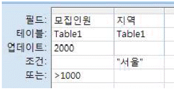
- UPDATE Table1 SET 모집인원 > 1000 WHERE 지역=“서울” AND 모집인원=2000;
- UPDATE Table1 SET 모집인원 = 2000 WHERE 지역=“서울” AND 모집인원>1000;
- UPDATE Table1 SET 모집인원 > 1000 WHERE 지역=“서울” OR 모집인원=2000;
- UPDATE Table1 SET 모집인원 = 2000 WHERE 지역=“서울” OR 모집인원>1000;
(정답률: 70%)
52. 다음 중 각 연산식에 대한 결과 값이 옳지 않은 것은?
- IIF(1,2,3) → 결과값: 2
- MID(“123456”,3,2) → 결과값: 34
- “A” & “B” → 결과값: “AB”
- 4 MOD 2 → 결과값: 2
(정답률: 63%)
53. 다음 중 외부 데이터인 Excel 통합 문서를 가져오거나 연결하기 위한 방법으로 옳지 않은 것은?
- 새 테이블로 추가하여 원본 데이터 가져오기
- 현재 데이터베이스의 테이블 중 하나를 지정하여 레코드로 추가하기
- 테이블, 쿼리, 매크로 등 원하는 개체를 지정하여 가져오기
- Excel의 원본 데이터에 대한 링크를 유지 관리하는 테이블로 만들기
(정답률: 45%)
54. 다음 중 <학생> 테이블의 '나이' 필드에 유효성 검사 규칙을 아래와 같이 지정한 경우 데이터 입력 상황에 대한 설명으로 옳은 것은?
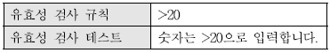
- 데이터를 입력하려고 하면 항상 '숫자는 >20으로 입력합니다.'라는 메시지가 먼저 표시된다.
- 20을 입력하면 '숫자는 >20으로 입력합니다.'라는 메시지가 표시된 후 입력 값이 정상적으로 저장된다.
- 20을 입력하면 '숫자는 >20으로 입력합니다.'라는 메시지가 표시되며, 값을 다시 입력을 해야만 한다.
- 30을 입력하면 '유효성 검사 규칙에 맞습니다.'라는 메시지가 표시된 후 입력 값이 정상적으로 저장된다.
(정답률: 73%)
55. 다음 중 기본 키에 대한 설명으로 옳지 않은 것은?
- 기본 키는 테이블 내 모든 레코드들을 고유하게 식별 할 수 있는 필드에 지정한다.
- 테이블에서 기본 키는 반드시 지정해야 하며, 한 개의 필드에만 지정할 수 있다.
- 데이터시트 보기에서 새 테이블을 만들면 기본 키가 자동으로 만들어지고 일련 번호 데이터 형식이 할당된다.
- 하나 이상의 관계가 있는 테이블의 기본 키를 제거하려면 관계를 먼저 삭제해야 한다.
(정답률: 69%)
56. 다음 중 [만들기] 탭 - [폼] 그룹에서 폼 보기와 데이터 시트 보기를 동시에 표시하는 폼을 만들 때 가장 적절한 명령은?
- 여러 항목
- 폼 분할
- 폼 마법사
- 모달 대화 상자
(정답률: 75%)
57. 다음 중 폼의 레코드 원본으로 사용할 수 없는 것은?
- 테이블
- 쿼리
- SQL문
- 매크로
(정답률: 65%)
58. 다음 중 필드의 각 데이터 형식에 대한 설명으로 옳지 않은 것은?
- 통화 형식은 소수점 이하 4자리까지의 숫자를 저장할 수 있으며, 기본 필드 크기는 8바이트이다.
- Yes/No 형식은 Yes/No, True/False, On/Off 등과 같이 두 값 중 하나만 입력하는 경우에 사용하는 것으로 기본 필드 크기는 1비트이다.
- 일련 번호 형식은 새 레코드를 만들 때 1부터 시작하는 정수가 자동 입력된다.
- 메모 형식은 텍스트 및 숫자 데이터가 최대 255자까지 저장된다.
(정답률: 65%)
59. 다음 중 아래와 같이 표시된 폼의 탐색 단추에 대한 설명으로 옳지 않은 것은?
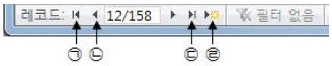
- ㉠ 첫 레코드로 이동한다.
- ㉡ 이전 레코드로 이동한다.
- ㉢ 마지막 레코드로 이동한다.
- ㉣ 이동할 레코드 번호를 입력하여 이동한다.
(정답률: 82%)
60. 다음 중 폼에 관련된 설명으로 옳지 않은 것은?
- 폼을 구성하는 컨트롤들은 마법사를 이용하여 손쉽게 작성할 수도 있다.
- 모달 폼은 다른 폼 안에 컨트롤로 삽입되어 연결된 폼을 의미한다.
- 폼은 매크로나 이벤트 프로시저를 이용하여 작업을 자동화 할 수 있다.
- 폼의 디자인 작업 시 눈금과 눈금자는 필요에 따라 표시하거나 숨길 수 있다.
(정답률: 65%)